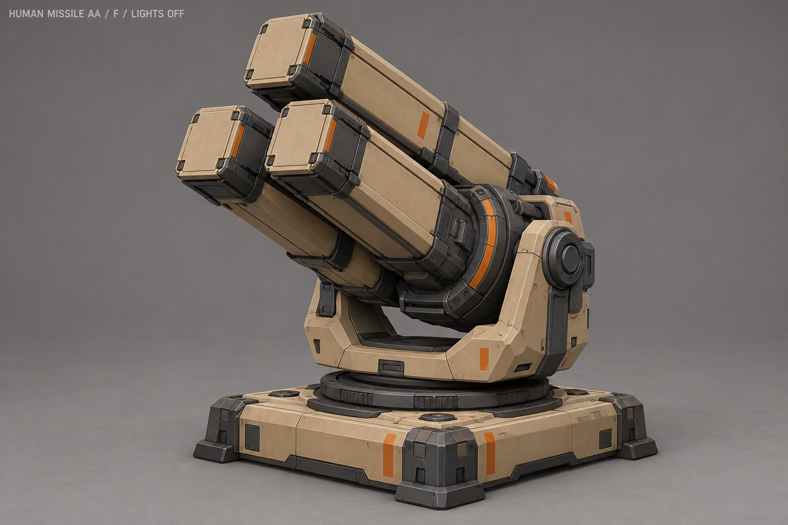
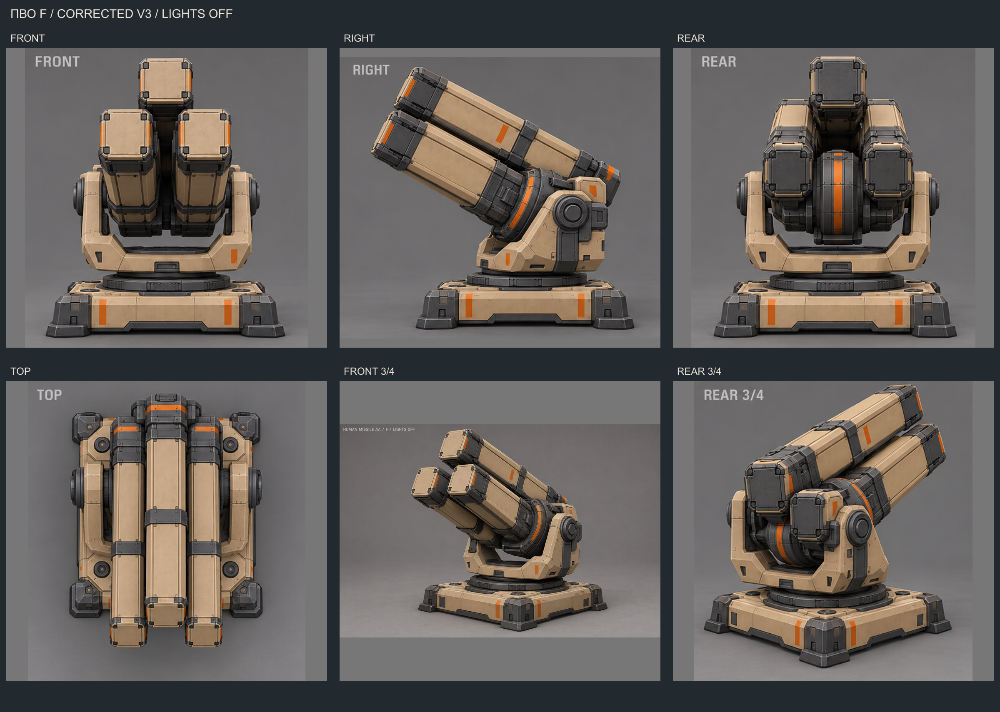
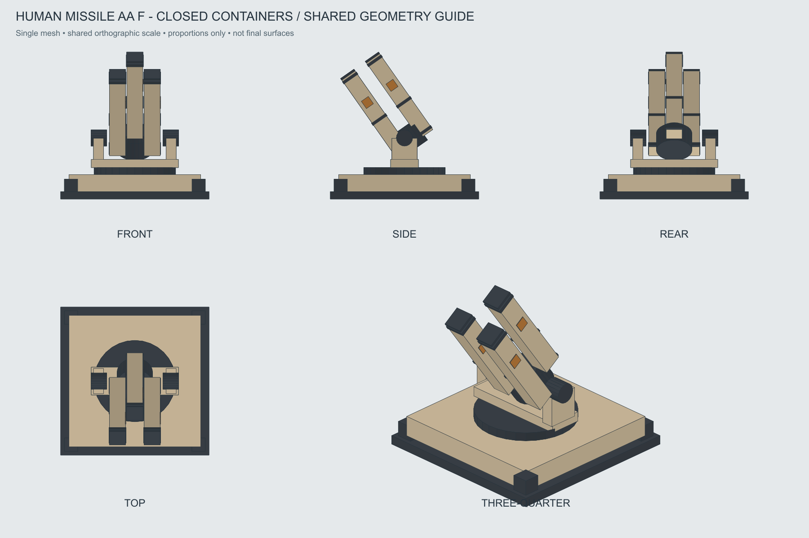

Ракетная ПВО · F «Барабан контейнеров»
Утверждена 29 октября 2026. Три длинных закрытых контейнера на индексируемом барабане, U-люлька и низкое основание. Строгие пропорции, только воздушные цели.
Паспорт моделирования · Оси и части · Входы для AI · OBJ · История A–H
Утверждённый основной вид

Исправленные детальные ракурсы V3
TOP имеет ошибку направления/позы; не переносить её в отдельную геометрию. Строгие проекции — ниже.

Проекции одной геометрии

Отдельная схема индексирования
Вид вдоль продольной оси контейнеров. Три закрытых квадратных крышки поворачиваются вместе с ротором, наружный подшипник неподвижен. Темп условный; это не готовый клип или ограничение боезапаса.
Наведение и старт — по реальным игровым событиям. В модельные референсы не включены ракета, дым, огонь или свечение. Точные крышки, темп пуска и полёт ещё требуют отдельного решения.
Внешний вид всех 11 зданий людей теперь выбран. Следующий этап: предложения стройки, повреждений и разрушения.